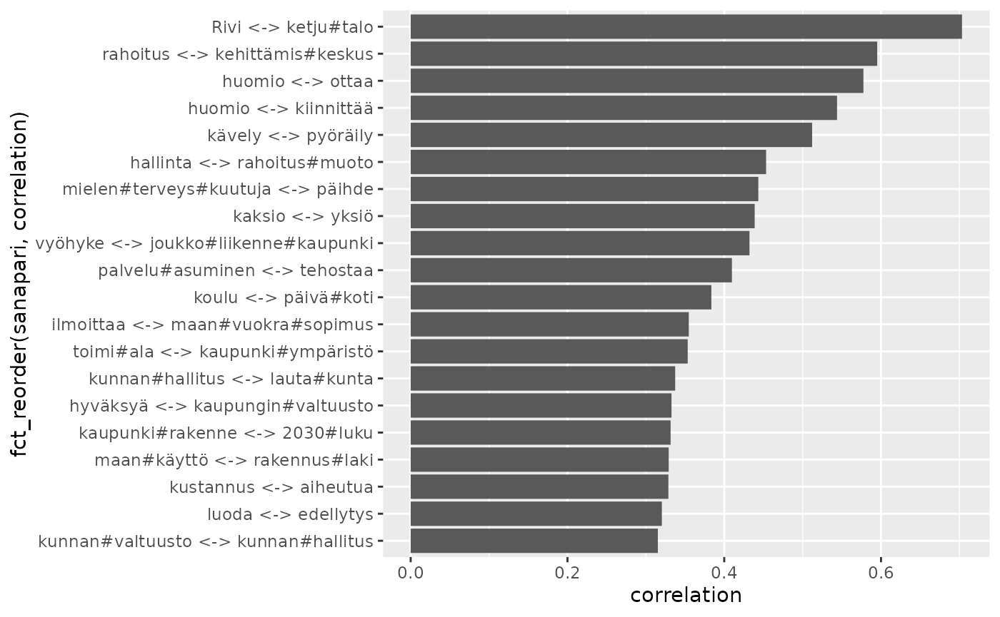
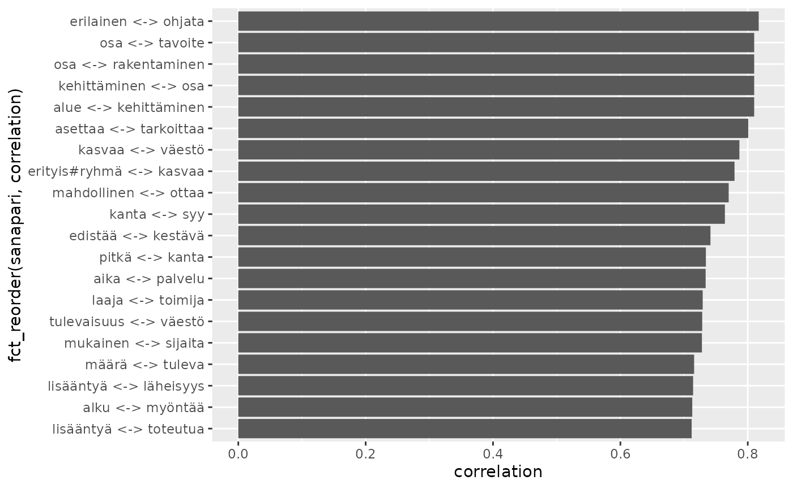

2 Tekstianalyysi tidytext-paketilla
Source:vignettes/articles/2-Tekstianalyysi-tidytext-paketilla.Rmd
2-Tekstianalyysi-tidytext-paketilla.Rmd
library(rfintext)
# devtools::install_github("StranMax/rfinstats")
library(rfinstats)
library(dplyr)
library(sf)
library(tidytext)
library(ggplot2)
library(stringr)
library(forcats)
aspol |>
count(LEMMA, UPOSTAG, sort = TRUE) |>
slice_max(n, n = 20) |>
ggplot() +
geom_col(aes(x = n, y = fct_reorder(LEMMA, n), fill = UPOSTAG))
suodatettavat <- c("✓", "", "x", "X", "@", "bostad")
pattern <- str_c(suodatettavat, collapse = "|")
noun_adj_verb <- aspol |>
filter(UPOSTAG %in% c("NOUN", "ADJ", "VERB"), # Vain merkitykselliset sanat
!str_detect(FEATS, "Foreign=Yes"), # Ruotsi- ja englanninkieliset mm.
!str_detect(LEMMA, pattern))
sanat_per_luokka <- noun_adj_verb |>
left_join(taantuvat) |>
filter(!is.na(luokka)) |>
count(luokka, LEMMA, sort = TRUE)
#> Joining with `by = join_by(kunta)`
sanat_per_luokka
#> # A tibble: 34,499 × 3
#> luokka LEMMA n
#> <fct> <chr> <int>
#> 1 Voimakkaasti kasvava kaupunki 1120
#> 2 Voimakkaasti taantuva kunta 934
#> 3 Voimakkaasti kasvava asunto 926
#> 4 Voimakkaasti kasvava vuosi 905
#> 5 Kasvava asunto 880
#> 6 Kasvava vuosi 844
#> 7 Kasvava kaupunki 780
#> 8 Kasvava alue 765
#> 9 Kasvava asuminen 750
#> 10 Taantuva kaupunki 748
#> # ℹ 34,489 more rows
sanat_yhteensä_per_luokka <- sanat_per_luokka |>
group_by(luokka) |>
summarise(total = sum(n))
sanat_yhteensä_per_luokka
#> # A tibble: 6 × 2
#> luokka total
#> <fct> <int>
#> 1 Voimakkaasti taantuva 38842
#> 2 Taantuva 32111
#> 3 Hieman taantuva 33430
#> 4 Hieman kasvava 19535
#> 5 Kasvava 52493
#> 6 Voimakkaasti kasvava 47972
sanamäärät <- left_join(sanat_per_luokka, sanat_yhteensä_per_luokka)
sanamäärät
#> # A tibble: 34,499 × 4
#> luokka LEMMA n total
#> <fct> <chr> <int> <int>
#> 1 Voimakkaasti kasvava kaupunki 1120 47972
#> 2 Voimakkaasti taantuva kunta 934 38842
#> 3 Voimakkaasti kasvava asunto 926 47972
#> 4 Voimakkaasti kasvava vuosi 905 47972
#> 5 Kasvava asunto 880 52493
#> 6 Kasvava vuosi 844 52493
#> 7 Kasvava kaupunki 780 52493
#> 8 Kasvava alue 765 52493
#> 9 Kasvava asuminen 750 52493
#> 10 Taantuva kaupunki 748 32111
#> # ℹ 34,489 more rows
luokka_tf_idf <- sanamäärät %>%
bind_tf_idf(LEMMA, luokka, n)
luokka_tf_idf
#> # A tibble: 34,499 × 7
#> luokka LEMMA n total tf idf tf_idf
#> <fct> <chr> <int> <int> <dbl> <dbl> <dbl>
#> 1 Voimakkaasti kasvava kaupunki 1120 47972 0.0233 0 0
#> 2 Voimakkaasti taantuva kunta 934 38842 0.0240 0 0
#> 3 Voimakkaasti kasvava asunto 926 47972 0.0193 0 0
#> 4 Voimakkaasti kasvava vuosi 905 47972 0.0189 0 0
#> 5 Kasvava asunto 880 52493 0.0168 0 0
#> 6 Kasvava vuosi 844 52493 0.0161 0 0
#> 7 Kasvava kaupunki 780 52493 0.0149 0 0
#> 8 Kasvava alue 765 52493 0.0146 0 0
#> 9 Kasvava asuminen 750 52493 0.0143 0 0
#> 10 Taantuva kaupunki 748 32111 0.0233 0 0
#> # ℹ 34,489 more rows
luokka_tf_idf %>%
select(-total) %>%
arrange(desc(tf_idf))
#> # A tibble: 34,499 × 6
#> luokka LEMMA n tf idf tf_idf
#> <fct> <chr> <int> <dbl> <dbl> <dbl>
#> 1 Voimakkaasti taantuva ) 561 0.0144 1.79 0.0259
#> 2 Hieman taantuva piwlo 86 0.00257 1.79 0.00461
#> 3 Taantuva kuusamo 72 0.00224 1.79 0.00402
#> 4 Hieman kasvava kanta#kaupunki 144 0.00737 0.405 0.00299
#> 5 Hieman taantuva mikkelinen 55 0.00165 1.79 0.00295
#> 6 Hieman kasvava avainteema 28 0.00143 1.79 0.00257
#> 7 Taantuva toimiala 36 0.00112 1.79 0.00201
#> 8 Voimakkaasti taantuva smf. 42 0.00108 1.79 0.00194
#> 9 Voimakkaasti taantuva luokitus 39 0.00100 1.79 0.00180
#> 10 Voimakkaasti kasvava kaupungin#kanslia 46 0.000959 1.79 0.00172
#> # ℹ 34,489 more rows
luokka_tf_idf %>%
group_by(luokka) %>%
slice_max(tf_idf, n = 10) %>%
ungroup() %>%
ggplot(aes(tf_idf, fct_reorder(LEMMA, tf_idf), fill = luokka)) +
geom_col(show.legend = FALSE) +
facet_wrap(~luokka, ncol = 2, scales = "free") +
labs(x = "tf-idf", y = NULL)
kappaleet <- aspol |>
filter(UPOSTAG %in% c("NOUN", "VERB"),
!str_detect(LEMMA, pattern),
nchar(LEMMA) > 2) |>
mutate(kappale = paste0(kunta, "-", sent)) |>
count(kappale, LEMMA)
word_pairs <- kappaleet |>
pairwise_count(LEMMA, kappale, sort = TRUE, upper = FALSE)
word_pairs
#> # A tibble: 366,774 × 3
#> item1 item2 n
#> <chr> <chr> <dbl>
#> 1 vuosi asunto 469
#> 2 alue kaupunki 361
#> 3 vuosi kaupunki 336
#> 4 tavoite kaupunki 331
#> 5 asunto kaupunki 311
#> 6 vuosi aika 300
#> 7 palvelu asuminen 278
#> 8 vuosi määrä 265
#> 9 asuminen kaupunki 265
#> 10 kunta alue 255
#> # ℹ 366,764 more rows
word_cors <- kappaleet %>%
group_by(LEMMA) %>%
filter(n() >= 40) %>%
pairwise_cor(LEMMA, kappale, sort = TRUE, upper = FALSE)
word_cors |> print(n = 50)
#> # A tibble: 310,866 × 3
#> item1 item2 correlation
#> <chr> <chr> <dbl>
#> 1 Rivi ketju#talo 0.703
#> 2 rahoitus kehittämis#keskus 0.595
#> 3 huomio ottaa 0.578
#> 4 huomio kiinnittää 0.544
#> 5 kävely pyöräily 0.512
#> 6 hallinta rahoitus#muoto 0.453
#> 7 mielen#terveys#kuutuja päihde 0.443
#> 8 kaksio yksiö 0.439
#> 9 vyöhyke joukko#liikenne#kaupunki 0.432
#> 10 palvelu#asuminen tehostaa 0.410
#> 11 koulu päivä#koti 0.384
#> 12 ilmoittaa maan#vuokra#sopimus 0.355
#> 13 toimi#ala kaupunki#ympäristö 0.353
#> 14 kunnan#hallitus lauta#kunta 0.337
#> 15 hyväksyä kaupungin#valtuusto 0.333
#> 16 kaupunki#rakenne 2030#luku 0.332
#> 17 maan#käyttö rakennus#laki 0.329
#> 18 kustannus aiheutua 0.329
#> 19 luoda edellytys 0.320
#> 20 kunnan#valtuusto kunnan#hallitus 0.315
#> 21 asuin#kerros#talo ketju#talo 0.306
#> 22 kunnan#valtuusto lauta#kunta 0.295
#> 23 kustannus yhdyskunta#rakentaminen 0.294
#> 24 kerros#talo#asunto rivi#talo#asunto 0.284
#> 25 väestö ikääntyminen 0.283
#> 26 rivi ketju#talo 0.278
#> 27 avustus myöntää 0.275
#> 28 yhdyskunta#rakentaminen kaava#alue 0.273
#> 29 aloittaa maan#vuokra#sopimus 0.273
#> 30 tontti luovuttaa 0.266
#> 31 periä sopimus#sakko 0.264
#> 32 pien#talo ketju#talo 0.261
#> 33 ympäristö#ministeriö raportti 0.257
#> 34 palvella kaava#alue 0.256
#> 35 määrätä maan#vuokra#sopimus 0.252
#> 36 yhdyskunta#rakentaminen periä 0.249
#> 37 kustannus maan#omistaja 0.249
#> 38 yhdyskunta#rakentaminen maan#omistaja 0.246
#> 39 vammainen kehitys#vammainen 0.243
#> 40 kaupunki#seutu rakenne#malli 0.243
#> 41 joukko#liikenne palvelu#taso 0.239
#> 42 korvaus periä 0.237
#> 43 sopimus#sakko maan#vuokra#sopimus 0.232
#> 44 hyöty maan#omistaja 0.231
#> 45 ehto määrätä 0.230
#> 46 kunnan#valtuusto hyväksyä 0.229
#> 47 katu puisto 0.228
#> 48 asuin#kerros#talo Rivi 0.226
#> 49 määrätä sopimus#sakko 0.221
#> 50 aloittaa ilmoittaa 0.220
#> # ℹ 310,816 more rows
word_cors |>
mutate(sanapari = paste0(item1, " <-> ", item2)) |>
slice_max(correlation, n = 20) |>
ggplot() +
geom_col(aes(x = correlation, y = fct_reorder(sanapari, correlation)))
kappaleet_kunta <- noun_adj_verb |>
count(kunta, LEMMA)
word_pairs_kunta <- kappaleet_kunta |>
pairwise_count(LEMMA, kunta, sort = TRUE, upper = FALSE)
word_pairs_kunta
#> # A tibble: 31,076,768 × 3
#> item1 item2 n
#> <chr> <chr> <dbl>
#> 1 asunto uusi 66
#> 2 asunto vuosi 66
#> 3 uusi vuosi 66
#> 4 asunto olla 65
#> 5 asunto tarve 65
#> 6 olla uusi 65
#> 7 tarve uusi 65
#> 8 olla vuosi 65
#> 9 tarve vuosi 65
#> 10 alue asunto 64
#> # ℹ 31,076,758 more rows
word_cors_kunta <- kappaleet_kunta %>%
group_by(LEMMA) %>%
filter(n() >= 40) %>%
pairwise_cor(LEMMA, kunta, sort = TRUE, upper = FALSE)
word_cors_kunta
#> # A tibble: 36,046 × 3
#> item1 item2 correlation
#> <chr> <chr> <dbl>
#> 1 erilainen ohjata 0.817
#> 2 alue kehittäminen 0.810
#> 3 kehittäminen osa 0.810
#> 4 osa rakentaminen 0.810
#> 5 osa tavoite 0.810
#> 6 asettaa tarkoittaa 0.801
#> 7 kasvaa väestö 0.787
#> 8 erityis#ryhmä kasvaa 0.779
#> 9 mahdollinen ottaa 0.770
#> 10 kanta syy 0.764
#> # ℹ 36,036 more rows
word_cors_kunta |>
mutate(sanapari = paste0(item1, " <-> ", item2)) |>
slice_max(correlation, n = 20) |>
ggplot() +
geom_col(aes(x = correlation, y = fct_reorder(sanapari, correlation)))